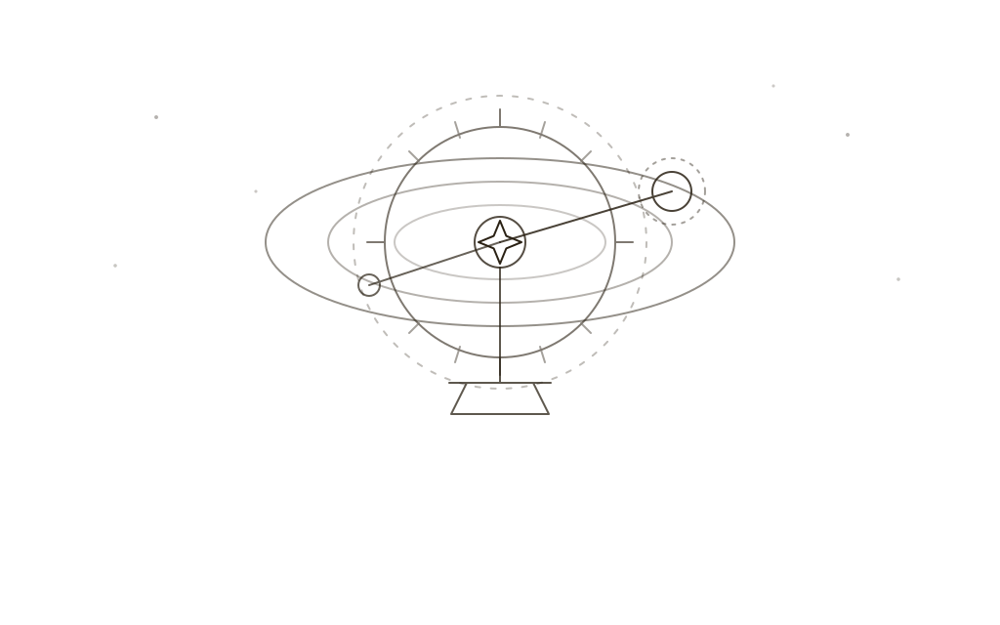
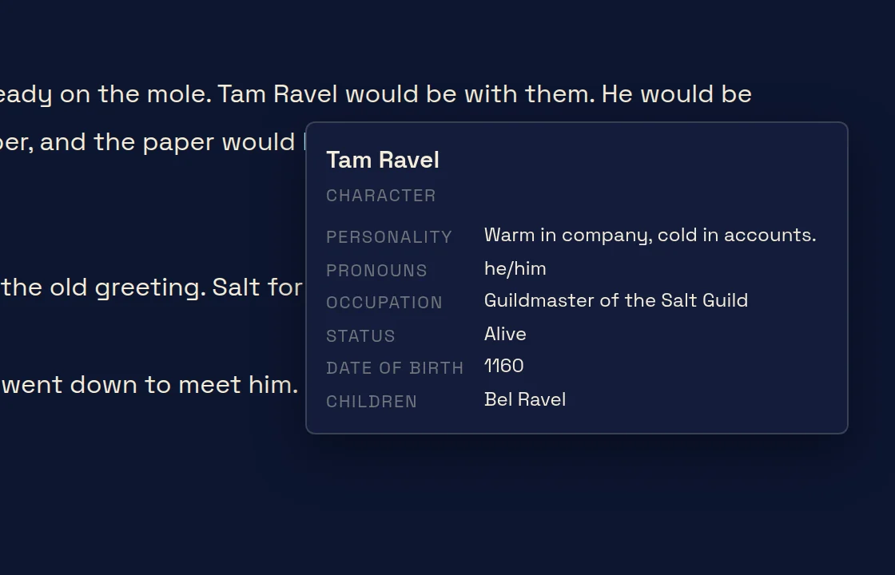

The links between things, the calendars they happen on, the maps they happen in, and the book you are writing about them.
Type a name and it becomes a link.

In any notes, write the name of something that has an entry and it becomes a link when the page is shown; type @ and Otto offers names as you go. It works the same in a chapter. You don’t stop writing to make a link; you write the name and carry on.
Every entry shows what links to it. The structured fields count as well: give a character a birthplace, and the place lists her among the people born there. Delete an entry, and World Health will tell you what was still pointing at it.


Dates are kept on the world’s own calendars.
A calendar is an entry like any other: its months and how long they run, its eras, where it starts counting. A world can have several (the empire’s reckoning, the temple’s, the one the sailors use) and any date can be written on any of them.
Dates can lean on one another. “Ten years after the Fall” is a date in Otto, and if you move the Fall, everything hanging from it moves with it. The chronology draws the lot on one axis, so you can see what the south was doing while the north was at war.

A map is a picture you pin things to.

Bring in any image: a scan of something drawn in pencil, something painted, a hex grid. Pin places onto it, draw regions and routes, and keep separate layers for separate eras, so a border can move across the centuries without a second map. Cut a sub-map from a parent (a city out of a kingdom) and it opens on its own, with its own pins.
If you have no map yet, the terrain generator will make one to begin from: coastline, rivers, high ground. It’s a beginning rather than a finished map, and it’s meant to be drawn over.
The book lives beside the world it’s about.

Chapters are entries too, so they link to the people in them and turn up in the same searches. Open one in writer mode and the rest of the program steps back: a page, your words, and a tally of what you’ve written this session. Anything between %% marks is a note to yourself. It never counts, and never leaves in an export unless you ask.
Ctrl-click a chapter and it opens in a second window, in writer mode, while the world stays open in the first. Rest the pointer on a name and a card says who it is. Chapters number themselves, so moving the ninth before the fourth leaves nothing to renumber. When you want a draft, export to Word with real headings, so Word’s navigation pane shows your chapters, or to Markdown.
Those are the four big rooms. Languages, family trees, the query builder and the rest are listed in the list of features on the About page.